CCXT offline adapter evidence
Pinned source/docs and locally mocked public response parsing; no exchange connections or orders.
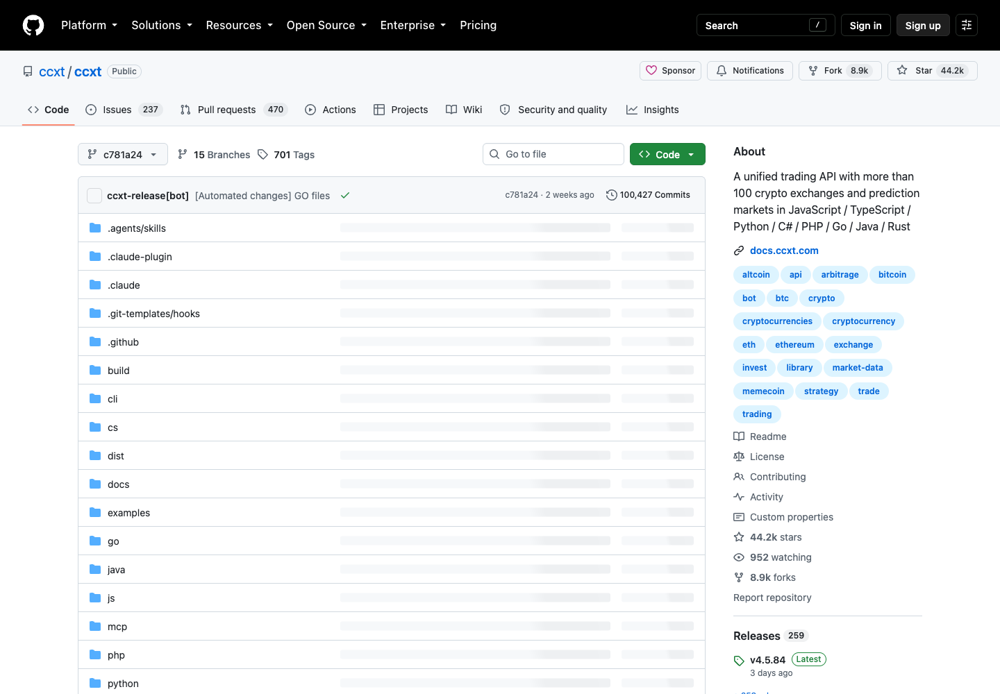
CCXT repository at the catalog-locked commit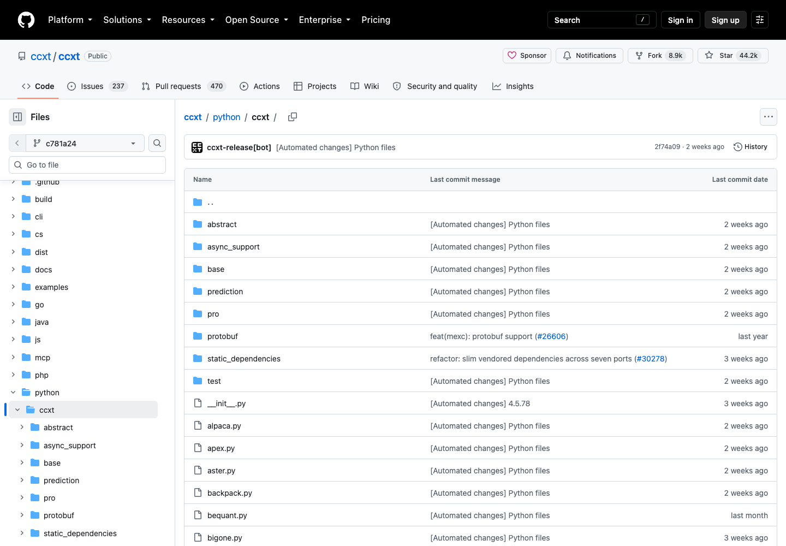
Python implementation listing with 104 exchange adapters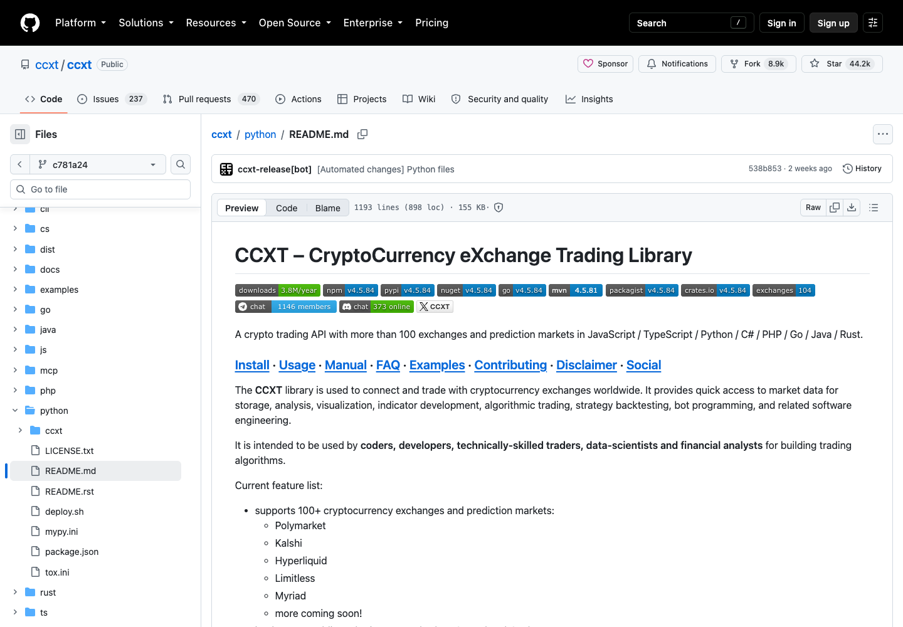
Python installation and unified API docs in the pinned repository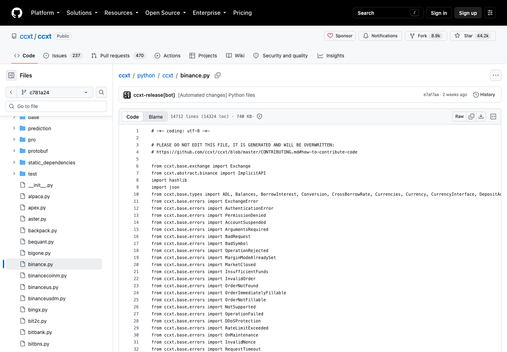
Binance adapter generated endpoint and class setup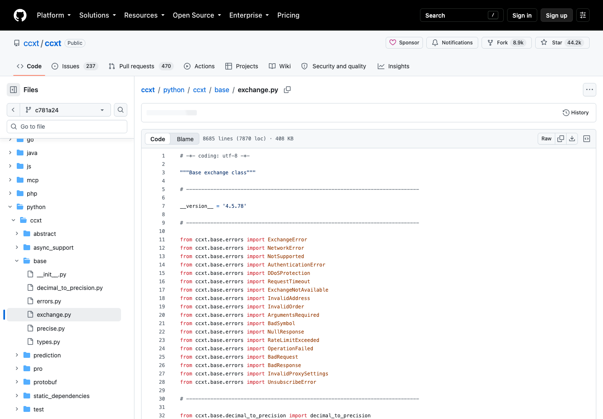
Shared Exchange API and market handling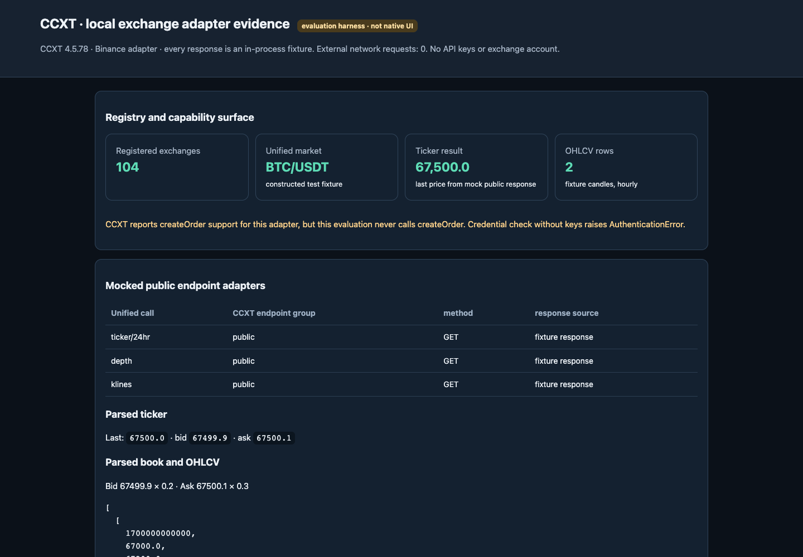
Actual CCXT public adapter parse results from local fixture response; report scroll 0px; not native UI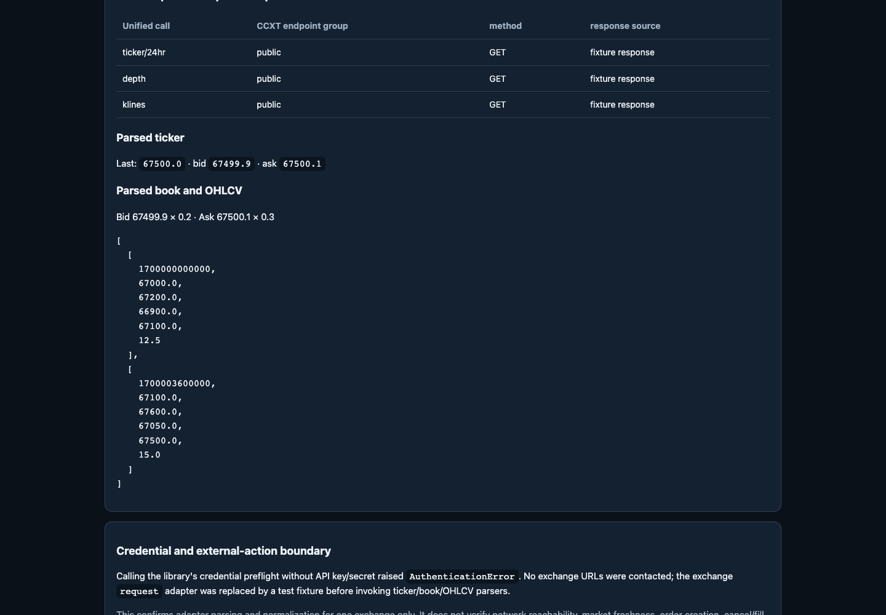
Actual CCXT public adapter parse results from local fixture response; report scroll 520px; not native UI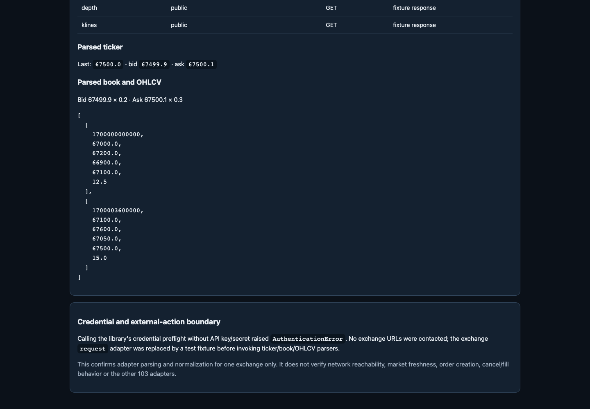
Actual CCXT public adapter parse results from local fixture response; report scroll 1040px; not native UI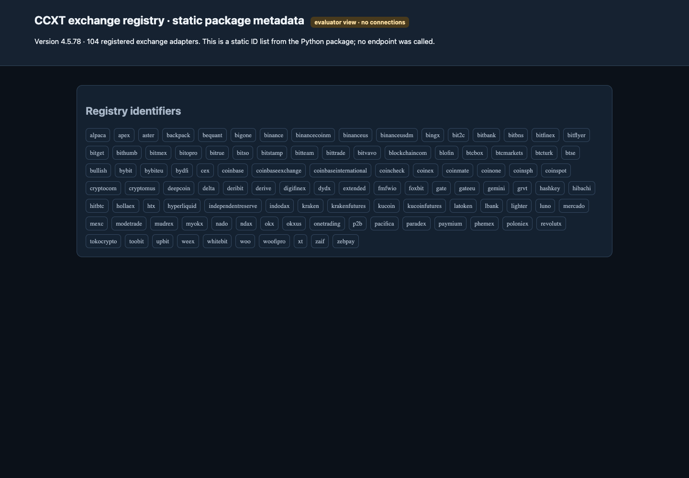
Static CCXT exchange registry count and first identifiers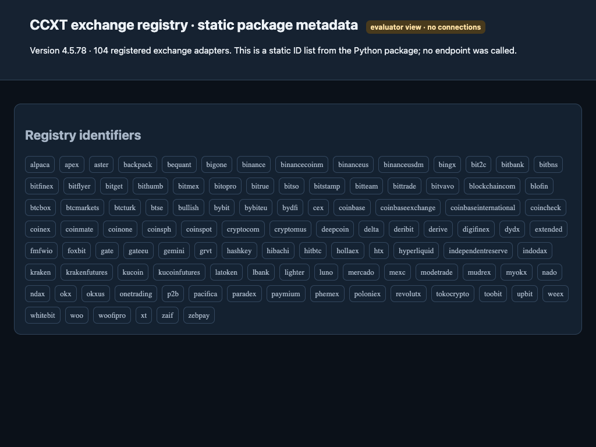
Static CCXT exchange registry reflow at 1024x768 viewport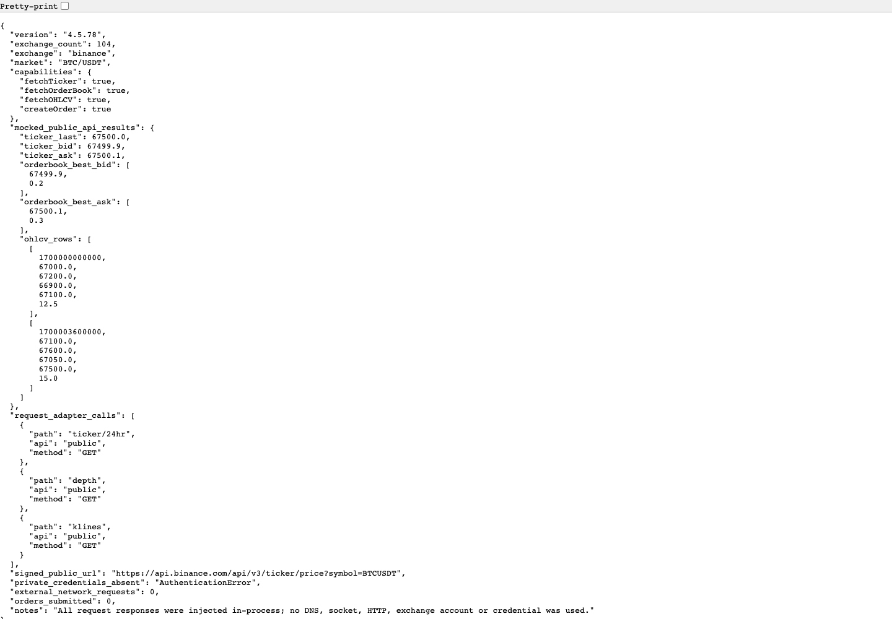
Raw CCXT adapter result object from local mocked responses and zero credentials